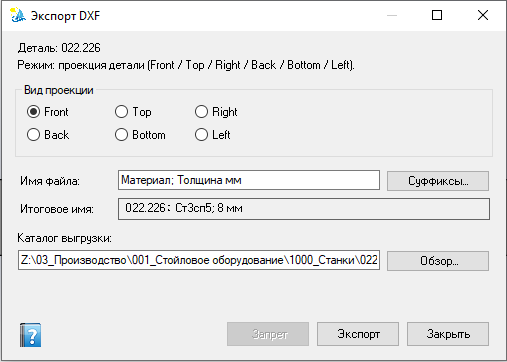

Экспорт DXF
Диалог выгрузки DXF для текущей (или указанной сценарием) детали: листовая развёртка, эскиз или проекция с выбором вида и имени файла. Обычно открывается из сценариев помощника или связанных команд экспорта документации; пакетный режим — DXF пакет.

Пример режима проекции: выбор вида (Front…Left), шаблон имени с суффиксами, preview итогового имени, каталог выгрузки; кнопки Запрет, Экспорт, Закрыть.
Шапка диалога
- Деталь — имя файла модели.
- Режим — текущий способ выгрузки (проекция, листовая развёртка, эскиз и т.п.).
Режимы выгрузки
- Листовая развёртка — для листовых деталей (sheet metal).
- Эскиз — выгрузка выбранного эскиза.
- Проекция — группа Вид проекции с переключателями Front / Top / Right / Back / Bottom / Left.
- Если подходящий режим ещё не выбран — интерфейс подскажет доступные варианты. Может отображаться опция Зафиксировать плоскость для закрепления вида.
Имя файла и каталог
| Элемент | Назначение |
|---|---|
| Имя файла | Шаблон имени (часто через суффиксы свойств: материал, толщина и т.п.). |
| Суффиксы… | Открыть выбор суффикса для вставки в шаблон. |
| Итоговое имя | Preview имени после подстановки свойств (только чтение). |
| Каталог выгрузки + Обзор… | Папка назначения DXF. Канонический путь связан со свойством «Путь dxf»; при другом каталоге система спросит: сменить канонический или скопировать файл. |
Кнопки
- Экспорт — выполнить выгрузку и обновить учёт артефакта.
- Запрет — понизить крепость условного рефлекса, открывшего это окно. Активна только когда окно вызвано активацией условного рефлекса; при рецепте от безусловного рефлекса, автоматизме или обычном запуске кнопка недоступна. В подсказке — текущая крепость У-рефлекса (обновляется при наведении курсора и после сброса). Подробности — Диалоговые рецепты.
- Закрыть — выход без экспорта и без записи отказа.
После экспорта
Выгружаются только конфигурации со свойством «Нужен dxf = Да» (вкладка конфигурации; если свойства там нет — общая вкладка документа). «Путь dxf» остаётся на общей вкладке. Если включена одна конфигурация, имя файла без суффикса конфигурации. Метаданные (штамп, отпечаток) пишутся автоматически. Имя файла формируется как базовое имя (без суффиксов) или базовое имя + пробел + суффиксы.